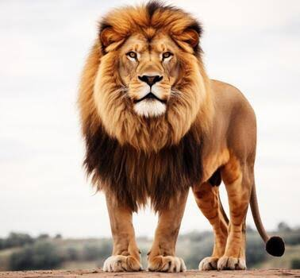
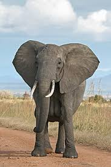
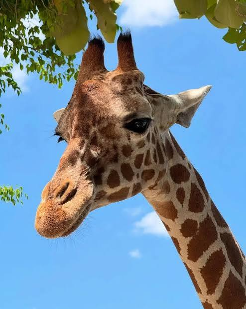
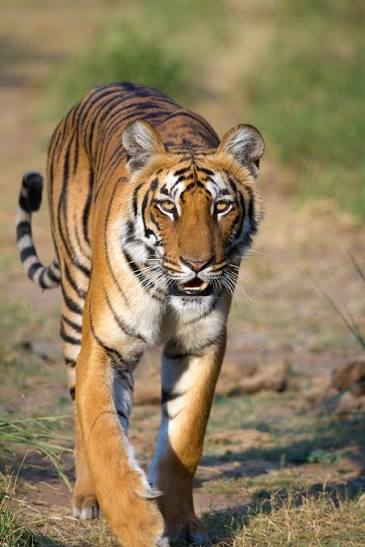
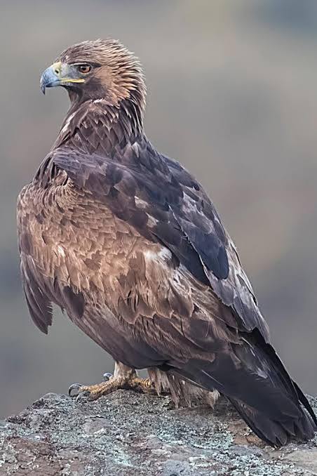
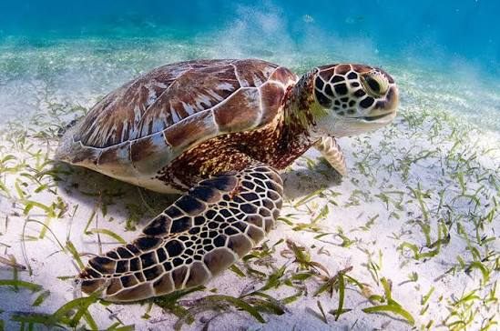
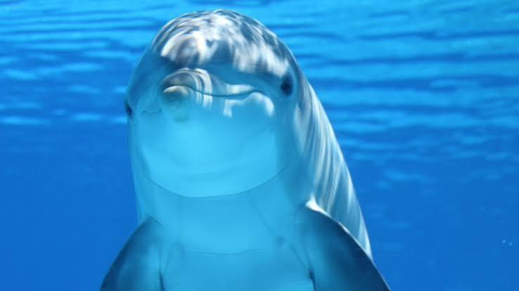

Nuestros Animales
En el Zoológico Mundo Animal podrás conocer especies provenientes de diferentes hábitats del planeta. Cada una recibe cuidados especializados para garantizar su bienestar.
Mamíferos

León
Descripción: Conocido como el rey de la selva.
Hábitat: Sabanas africanas.
Características: Gran melena, fuerte y social.
Alimentación: Carnívoro.

Elefante
Descripción: El mamífero terrestre más grande.
Hábitat: África y Asia.
Características: Trompa larga y colmillos.
Alimentación: Herbívoro.

Jirafa
Descripción: Animal más alto del mundo.
Hábitat: Sabanas africanas.
Características: Cuello muy largo.
Alimentación: Herbívora.

Tigre
Descripción: Gran felino de rayas negras.
Hábitat: Bosques de Asia.
Características: Excelente cazador.
Alimentación: Carnívoro.
Aves

Águila
Descripción: Ave rapaz de gran tamaño.
Hábitat: Montañas y bosques.
Características: Vista muy desarrollada.
Alimentación: Carnívora.
Reptiles

Tortuga
Descripción: Reptil protegido por un caparazón.
Hábitat: Playas y océanos.
Características: Longeva y resistente.
Alimentación: Omnívora.
Animales Acuáticos

Delfín
Descripción: Mamífero marino muy inteligente.
Hábitat: Mares y océanos.
Características: Gran capacidad de comunicación.
Alimentación: Peces y calamares.